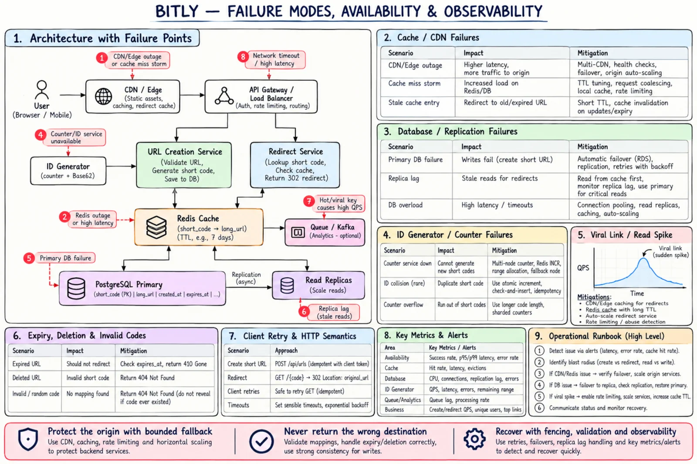

Topic · Scaling Reads: Bitly URL Shortener
Bitly Failures and Operations
Cache, edge, database, and analytics failure modes - and the metrics, tracing, and runbook that keep redirects correct.


Quick Revision
- Hidden dependency: the origin DB during a cache outage - cap the fallback.
- Stampede → single-flight, soft TTL, jitter, origin concurrency limits.
- Viral link → edge cache, replicated hot entries, coalescing, rate limits.
- Never return a wrong destination - 503 is safer.
- Watch p99, 302/404/410/429/5xx, hit rates, origin fallback QPS, per-key QPS.
Redirect, cache, and edge failures
- Cache stampede - single-flight, lock, soft TTL, jitter, origin concurrency limits.
- Cold cache overloads DB - gradual warm-up, admission control, preload hottest codes, fallback caps.
- Redis outage → DB outage - circuit breaker, bounded fallback QPS, shedding, safe edge serving.
- Negative cache hides new code - delete after commit; short TTL.
- Expired link still redirects - TTL = min(default, time left); validate at service and edge.
- Disabled link served by CDN - versioned keys, purge, short TTL, tombstones.
- 301 can't be revoked - 302 by default.
- Viral code overloads one node - edge, replication/near cache, coalescing, rate limits, autoscaling.
- Edge outage - multi-CDN/health routing, origin reserve, graceful fallback.
- Edge returns wrong destination - short TTL, version/expiry checks, purge tooling, never fail open.
Database, analytics, and ops failures
- New code false 404 - replica lag → warm Redis, read primary, min-version routing.
- Two primaries after failover - managed/consensus failover with fencing.
- Lag hidden by averages - per-replica metrics; drop outliers from routing.
- Backup won't restore - automated drills, RPO/RTO checks.
- Index bloat / growth - vacuum, archive expired rows, size indexes.
- Premature sharding - index, cache, replicas first.
- Analytics slows redirects - async publish; drop analytics before hurting the SLO.
- Queue backlog / duplicate clicks - lag alerts, autoscale consumers, DLQ; event IDs + idempotent aggregation.
- Bots flood creation - per-user/IP/device limits, quotas, WAF, blocklists.
- "Healthy" while redirects fail - track redirect latency, status codes, hit rate, fallback QPS.
- Recovery causes second outage - staged traffic return, throttled refill.
- Unsafe URL rendered as HTML - render as text, escape by default.
Observability and runbook
- Frontend - Web Vitals, submit success/error, create latency, copy success, JS errors by release.
- Redirect - p50/p95/p99; 302/301/404/410/429/5xx; edge and Redis hit rates; evictions; origin fallback QPS; top-N codes; single-flight waiters.
- Creation - QPS, latency, validation/alias conflicts, allocator latency/errors, range exhaustion, unique collisions, idempotency replays.
- Data - primary CPU/IO/connections/WAL/growth, per-replica lag, backup freshness and restore tests, PK lookup latency, cleanup backlog.
- Analytics - queue depth/age, consumer rate/failures, duplicates/drops, warehouse freshness.
- Tracing - correlation ID browser → gateway → service → Redis/DB → queue; keep slow, miss, 404/410, replica fallback, edge/origin mismatch traces.
- Locate: create, redirect, frontend, cache, DB, allocator, or analytics.
- Protect the origin: rate limits, fallback caps, breakers, shedding.
- Degrade safely: keep redirects correct; drop analytics/management first.
- Fail over with fencing; verify replication.
- Warm caches gradually; watch DB pressure.
- Validate with synthetic known-code redirects and new-code creates.
- Communicate, timeline, improve alerts and runbooks.
Interview practice
Answer aloud, then reveal.
How do you handle a viral short link?
Edge cache, local/replicated cache, coalesced misses, TTL jitter, autoscaled redirect tier, rate limits; watch per-key QPS.
How do you handle a cache outage?
Bounded DB fallback, circuit breaker, origin QPS cap, safe edge serving, load shedding.
Biggest hidden dependency?
The origin DB during a cache outage - plan for bounded fallback, not perfect cache uptime.
How do you rate limit?
Per user/account/IP/device on creation; optional per-key/source abuse controls; 429 with Retry-After.
How do you secure destinations?
Allowed schemes, length limits, optional scanning/blocklists, takedown and purge paths.
How do you monitor correctness?
Synthetic known-code tests, status distribution, expiry tests, cache/DB consistency samples, replica lag, failover drills.